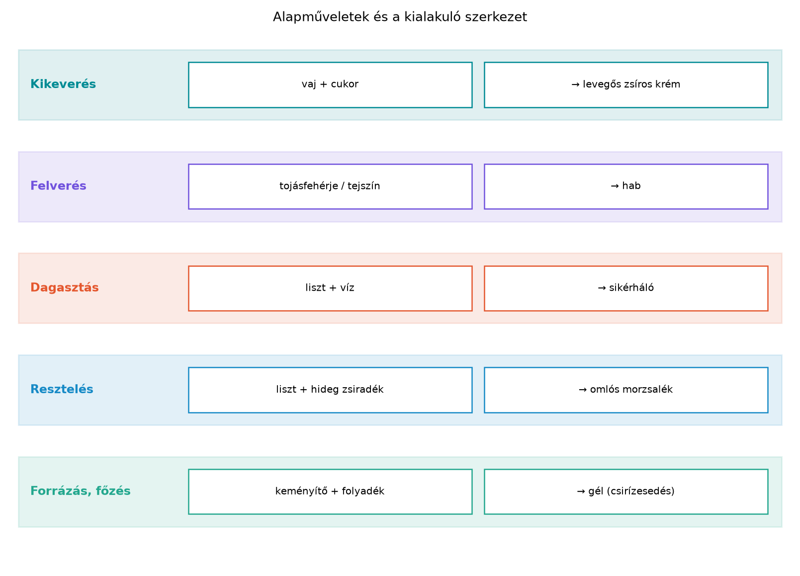

Képzeld el a műhelyben a reggeli termelést. Az egyik asztalon vajat kevernek ki cukorral, hogy könnyű, krémes vajkrém legyen belőle. A másikon tojásfehérjét vernek habbá, hogy légies piskótát vagy habcsókot süssenek belőle. Mellette a tésztagép dagasztja az élesztős tésztát, egy másik cukrász pedig hideg vajat resztel a liszttel, hogy omlós linzert kapjon. Közben tejet forralnak, sárgáját és keményítőt kevernek hozzá, hogy sűrű, sima krémet főzzenek.
Ha ezekben a műveletekben nem érted, miért történik éppen az, ami, akkor a következő hibák állandóan visszatérnek:
Ebben az alfejezetben ezeket az alapműveleteket tanulod meg a fizikai-kémiai hátterükkel együtt. Ha érted a hab, az emulzió és a gél fogalmát, akkor a későbbi krémek, felvert tészták, ganache-ok és fagylaltkeverékek elkészítése is világos lesz.
A cukrászati alapműveletek nem önkényes mozdulatsorok, hanem mindegyik egy adott szerkezetet hoz létre a nyersanyagokban. Az alábbi ábra öt, egymástól független művelet–szerkezet párt mutat: soronként a művelet, a kiinduló anyagok és a kialakuló szerkezet. A sorok nem egymás utáni lépések.

A szövegben mindegyik doboz tartalmát kifejtem. A lényeg: minden művelet célja, hogy a nyersanyagban egy adott fizikai szerkezetet – habot, emulziót, gélt, sikérhálót vagy morzsalékos vázat – hozzon létre. Ha ezt a célt érted, a lépések sorrendje és a hibák oka is kézenfekvő lesz.
Definíció. A keverés általános művelet, amelynek célja két vagy több összetevő egyenletes elegyítése anélkül, hogy feltétlenül levegőt dolgoznánk bele. Például száraz anyagok összekeverése vagy a liszt belekeverése egy tésztába.
Definíció. A kikeverés olyan keverés, amelynek során zsiradékot (általában vajat vagy margarint) és cukrot dolgozunk össze, miközben levegőt viszünk be. A végeredmény egy lágy, világos, krémes massza, amely alapja lehet vajkrémeknek, linzertésztáknak vagy kevert süteményeknek.
Definíció. A felverés mechanikai levegőbevitel, amelynek során folyadékot (tojásfehérje, egész tojás, tejszín) habbá verünk. A cél a térfogat növelése és a lazítás.
Definíció. A dagasztás vagy gyúrás a liszt és víz (vagy más folyadék) mechanikai megmunkálása. Célja a lisztben lévő sikérfehérjék hidratálása és hálóba rendezése, ami rugalmas, nyújtható tésztát eredményez. A dagasztás kifejezést inkább az élesztős tésztákra, a gyúrást inkább az omlós vagy más tészták rövid összeállítására használjuk.
Definíció. A resztelés (morzsolás) liszt és hideg zsiradék összemorzsolása úgy, hogy a zsiradék vékonyan bevonja a liszt- és cukorszemcséket, és megakadályozza a sikérháló kialakulását. Eredménye morzsalékos, omlós, pelyhes tészta.
Definíció. A forrázás olyan művelet, amelyben forró folyadékot (vizet, tejet, cukoroldatot) keverünk valamilyen szilárd anyaghoz, vagy éppen a szilárd anyagot adjuk a forró folyadékhoz, például a forrázott tészta készítésekor. A forrázás célja lehet a keményítő előcsirizesítése, a fehérje denaturálása vagy a tészta elősűrítése.
Definíció. A főzés hőközléses művelet, amelynek során egy keveréket forráspont közeli hőmérsékleten tartunk, vagy forralunk, miközben az állaga sűrűsödik, ízei kialakulnak, esetleg kémiai reakciók játszódnak le. A főzés a cukrászatban leggyakrabban krémek, cukoroldatok, gyümölcstöltelékek besűrítésére szolgál.
Definíció. A csirízesedés a keményítőszemcsék duzzadása meleg vízben, amelynek során a szemcsék vizet vesznek fel, szétrepednek, és viszkózus, gélszerű oldatot képeznek. A csirízesedés a főzött krémek sűrítésének alapja.
Definíció. Az alvadás a fehérjék hő hatására bekövetkező denaturációja és összekapcsolódása, amelynek során a folyékony fehérjeoldatból szilárd, gélszerű háló lesz. A tojásfehérje és a tojássárgája is így sűríti a krémeket, a tojáshabot pedig így stabilizálja hőkezeléskor.
A hab gáz (általában levegő) finom eloszlása folyadékban vagy félkemény anyagban. A cukrászatban a habot leggyakrabban tojásfehérjéből, egész tojásból vagy tejszínből verjük fel.
A habképzés lépései a tojásfehérje példáján
A hab stabilitásának feltételei
A felverés fokozatait az ábra mutatja: a habos fehérjéből lágy hab lesz (a habverőn a csúcs visszahajlik – ekkor kezdjük a cukor adagolását), majd kemény, fényes hab (a csúcs áll, a tál felfordítható); a túlvert hab matt, szemcsés, és folyadék válik ki belőle.
Továbbvitt eredmény. Ezt a habképzési tudást használjuk a felvert tésztáknál (Habbal lazítás és a felvert tészták rendszere), a tojáshabkrémeknél (Tojáskrémek II: tojáshabkrémek és habcsókfélék) és a habcsókoknál. A stabilitás szabályai az oka annak, hogy a piskótatésztánál miért kell a habot óvatosan, forgatva keverni a liszthez, hogy a légbuborékok ne törjenek össze.
Az emulzió két, egymással nem elegyedő folyadék – leggyakrabban zsír és víz – finom keveréke, amelyben az egyik folyadék apró cseppekben oszlik el a másikban. A cukrászatban a vajkrém, a majonéz jellegű alapok, a ganache és a tojássárgás krémek mind emulziók.
Az emulziók két alaptípusa
| Típus | Belső fázis (cseppek) | Külső fázis (folytonos) | Példa a cukrászatban |
|---|---|---|---|
| Víz a zsírban (V/Z) | víz | zsír | vaj, hidegen kevert vajkrém |
| Zsír a vízben (Z/V) | zsír | víz | tejszín, tojássárgás főzött krém, ganache |
Az emulgeálószerek szerepe. Az emulzió kialakulásához és stabilitásához általában emulgeálószerre van szükség. Az emulgeálószer molekulája egyszerre kötődik a vízhez és a zsírhoz, ezért a cseppek felületén hártyát képez, és megakadályozza a cseppek összeolvadását (koaleszcenciát). A tojássárgája lecitintartalma, a tejben a kazein, a csokoládéban a hozzáadott lecitin (szója- vagy napraforgólecitin) emulgeálószer; a kakaóvaj maga a zsírfázis.
A kicsapódás okai és megelőzése
Az emulzió akkor csapódik ki, ha a cseppek összeolvadnak, és a két fázis szétválik. A leggyakoribb okok:
Példa: a vajkrém kikeverése. A főzött tojáshabhoz a puha vajat kis adagokban, állandó keverés mellett adjuk. Ha a vaj túl hideg, az emulzió kicsapódik; ha túl meleg, a krém folyik. Az ideális vajhőmérséklet körülbelül 18–22 °C, a tojáshabot pedig a vaj adagolása előtt kb. 25–30 °C-ra lehűtjük (ellenőrizendő: a receptúra szerint). A hibásan kicsapódott vajkrémet gyakran meg lehet menteni úgy, hogy a tál falát enyhén, folyamatos keverés mellett melegítjük, vagy a krém egyötödét langyosra olvasztjuk és visszakeverjük.
Továbbvitt eredmény. Az emulzió fogalmát alkalmazzuk a vajkrémeknél (Vajkrémek: főzött, tojássárgás, habcsókos vajkrém), a tejszínkrémeknél és a ganache-nál (Tejszínkrémek, bavarois, mousse és ganache-krémek), valamint a fagylaltkeverékeknél (Fagylaltkeverék-számítás: szárazanyag, cukor, zsír, édesség és fagyáspont), ahol a zsír és víz elkeveredését kell stabilizálni.
A gél olyan folyadékot csapdába ejtő háromdimenziós háló, amely szilárd, de rugalmas anyagot alkot. A cukrászatban a gélesedést keményítő, zselatin, pektin vagy fehérje (pl. tojás) hozhatja létre.
Csirízesedés. Ahogy a Keményítők, darák, gluténmentes lisztek és sütőipari termékek alfejezetben tanultad, a keményítő hideg vízben nem oldódik, csak szuszpendálódik. Melegítés hatására a keményítőszemcsék vizet vesznek fel, megduzzadnak, szétrepednek, és viszkózus, gélszerű folyadékot adnak. Ezt hívjuk csirízesedésnek. A csirízesedés hőmérséklete fajtától függ: burgonyakeményítő kb. 58–66 °C, kukoricakeményítő kb. 62–72 °C, rizskeményítő kb. 68–78 °C (ellenőrizendő: forrástáblázat).
A főzött krém készítésekor a keményítőt mindig hideg tejben vagy vízben kell simára keverni, mielőtt a forró folyadékhoz adjuk. Ha a keményítőt közvetlenül a forró tejbe szórjuk, a szemcsék felületén azonnal gélszerű hártya képződik, amely megakadályozza a belső rész csirizesedését; így csomós lesz a krém. A csomósodás elkerülésére tehát a “hidegen keverj, forrón főzz” elvet kell követni.
Fehérje-alvadás. A tojássárgája vagy az egész tojás a hőkezelés során szintén gélszerű hálót képez. A tojássárgája 65–70 °C körül kezd sűrűsödni, 80–85 °C fölött már kicsapódik, és rántottaszerű csomók képződnek (ellenőrizendő). Ezért a forró tejet a tojássárgához mindig vékony sugárban, állandó keverés mellett adjuk, hogy a hőmérséklet lassan emelkedjen, és a krém ne aludjon össze. A keményítő nélküli tojáskrémet (angolkrém) a forráspontig nem melegítjük, hanem 82–85 °C-ig hőkezeljük, amíg a krém bevonja a fakanál hátát (ellenőrizendő: hatályos útmutató). A keményítővel sűrített főzött krémnél (sárgakrém, vaníliakrém) a keményítő védi a tojást a kicsapódástól, ezért ezt felforraljuk (lásd a Főzés, besűrítés szakaszt).
Továbbvitt eredmény. Ezt a gélesedési ismeretet használjuk a főzött sárgakrémnél és vaníliakrémnél (Tojáskrémek I: főzött sárgakrém és vaníliakrém), a forrázott tésztánál (Forrázott tészta és tésztahüvelyek) és a gyümölcsök besűrítésénél (Hőkezelés, vastagcukorban és alkoholban tartósítás). A csirízesedés és a fehérjealvadás közös elve, hogy a hőmérséklet és a keverés szabályozása nélkül nem kapunk sima, stabil gélt.
A keverés során az összetevőket egyenletesen elegyítjük. Ha a keverés célja emulzió vagy levegőbevitel, akkor a sebesség, a hőmérséklet és az adagolás kritikus.
A habba keverés (beforgatás, aláforgatás) a felvert tészták és a mousse-ok kulcsmozdulata: a hab harmadával lazítjuk a nehezebb masszát, a maradék habot ráhelyezzük, majd a spatula élével középen leszúrunk, az alján át a falon felhozzuk és kifordítjuk, közben a tálat minden mozdulat után negyed fordulattal elforgatjuk. Amint a massza egynemű, abbahagyjuk. Habverővel vagy körkörösen keverve a légbuborékok összetörnek.
A kikeverés során a puha vajat és a cukrot keverjük össze, amíg a keverék világosabb és habosabb nem lesz. A vajban lévő zsiradék a cukorszemcsékkel együtt apró légbuborékokat zár be, így a keverék térfogata megnő. Ez a levegő a később hozzáadott tojás és liszt belekeverésekor is megmarad, és a sütemény lazulását segíti. A vaj hőmérséklete 18–22 °C körül ideális: túl hidegen a cukor nem keveredik el, túl melegen a vaj olvad, és a levegőbuborékok összeesnek (ellenőrizendő).
A felverés célja a hab képzése. A gépi habverő sebességét fokozatosan növeljük. Először a tojásfehérjét önmagában verjük, amíg lágy hab nem lesz, majd a cukrot több részletben adjuk hozzá, és tovább verjük kemény, fényes habbá. A hab akkor kész, ha a habverőt kihúzva a hab csúcsa állni marad, de a hab még fényes, nem szemcsés. A túlvert hab száraz, mattra törő, és a belőle készült tészta vagy krém összeesik.
A dagasztás a lisztben lévő sikérfehérjék (gliadin, glutenin) hidratálását és hálóba rendezését végzi el. A víz hatására a glutenin és gliadin összekapcsolódik, és rugalmas, nyújtható hálót alkot. A dagasztás során a tészta először ragadós, majd fokozatosan sima, feszes felületűvé válik. Ezt a folyamatot “sikérképzésnek” nevezzük.
Kézi dagasztáskor a tésztát tenyértővel elnyomjuk és előre nyújtjuk, visszahajtjuk, negyed fordulattal elforgatjuk, és ezt ismételjük. A dagasztottságot az ablakpróbával ellenőrizzük: egy kis darab tészta vékony, áttetsző hártyává nyújtható, ha a sikérháló kialakult; ha elszakad, tovább kell dagasztani.
Az élesztős tésztákat általában legalább 8–12 percig dagasztjuk géppel, amíg a tészta el nem válik az edény falától, és sima, rugalmas felületű nem lesz. A gyúrásnál a túlgyúrás tönkreteszi a sikérhálót, ezért az omlós tésztáknál csak rövid ideig, alacsony sebességen szabad gyúrni. A gyúrt omlós tészta gyorsan készül: a hideg vajat elmorzsoljuk a liszttel, majd a folyadékkal éppen csak összeállítjuk. A túldolgozás kemény tésztát eredményez.
Biztonsági korlát. A gépi művelet tanműhelyi vagy üzemi környezetben, oktatás után és felügyelet mellett végezhető; otthon háztartási géppel, kis adagban gyakorolj. Működő gépbe benyúlni tilos; a tálat csak leállított gépnél vesszük ki.
A reszteléskor a hideg vajat a liszttel és a cukorral kézzel vagy a keverőgép lapos keverőfejével (lapátjával) morzsoljuk össze, amíg a keverék apró morzsalékot nem alkot. A hideg vaj nem olvad meg, hanem vékonyan bevonja a liszt- és cukorszemcséket. Ez a zsírréteg megakadályozza a sikérháló kialakulását, így a tészta sütés közben omlós, pelyhes szerkezetű lesz. A resztelés hagyományos, gyors módszer, de géppel is elvégezhető alacsony sebességen, rövid ideig.
A forrázás legjellemzőbb példája a forrázott tészta (pâte à choux). Először vizet, vajat, sót és cukrot forralunk, majd a lisztet hirtelen belekeverjük, és addig keverjük a tűzön, amíg a tészta el nem válik az edény falától. A forrázás előcsirizesíti a keményítőt, és a tészta egy része vizet köt meg, így később a tojásokat fokozatosan be lehet keverni anélkül, hogy a tészta túl folyóssá válna. A tojás hozzáadása után a tésztát habzsákból formázzuk és sütjük.
A forrázás másik esete a főzött krém készítése, amikor a tojássárgát forró tejjel melegítjük fel fokozatosan (temperálás), majd visszaöntjük a lábosba, és lassú tűzön sűrítjük.
Figyelem. A forrázott tészta és a főzött krém fröccsenhet, a 100 °C feletti cukoroldat a bőrre tapad: hosszú szárú fakanalat és védőkesztyűt használunk, a lábos nyelét befelé fordítjuk.
A főzés során a krém vagy a cukoroldat hőmérsékletét emeljük, és az anyag megfelelő állagúvá sűrűsödik. Keményítő nélküli tojáskrémet (angolkrém) 82–85 °C-ig melegítünk, és nem forralunk, hogy a fehérje ne csapódjon ki; a keményítővel sűrített főzött krémet (sárgakrém, vaníliakrém) folyamatos keverés mellett felforraljuk, és forrásban tartjuk (tanulási példa: 1–2 percig a besűrűsödés után; a technológiai lapon rögzített hőkezelési paraméter, pl. legalább 85 °C maghőmérséklet legalább 5 percig, a Cukrászati termékcsoportok, megnevezések és a technológiai lap alfejezetben látható), hogy a keményítő teljesen csirízesedjen és a tojássárgája amiláza inaktiválódjon (ellenőrizendő: receptúra, HACCP-terv). A cukoroldatokat viszont meghatározott hőfokra főzzük (pl. kb. 116–118 °C-ig fondánhoz, 165–175 °C-ig karamellhez és grillázshoz – ellenőrizendő: a Cukorfőzési fokok és kézi próbák táblázata), mert így szabályozzuk a víztartalmat és a későbbi kristályosodást.
A besűrítés a folyadék bepárlása vagy keményítő, fehérje hozzáadása révén az állag növelése. A besűrítés kritikus pontja a folyamatos keverés, hogy a gél egyenletes legyen, és a krém ne csomósodjon vagy égjen le.
Bár ez az alfejezet elsősorban a műveletek elvét tanítja, az arányok itt is számítanak. Nézzünk két rövid példát a későbbi krémek és tészták előkészítésére.
1. példa: keményítő arányos mennyisége főzött krémhez
Egy főzött vaníliakrém receptje szerint a tej tömegéhez 8% kukoricakeményítőt kell keverni. Mennyi keményítő kell 1,2 kg tejhez?
Adott: , a keményítő aránya .
Keresett:
Számítás:
Ellenőrzés: A keményítőt először hideg tejben oldjuk fel, majd a forró tejhez adjuk. 96 g keményítő 1200 g tejhez valóban sűrű krémet ad; folyósabb krémhez ennél kevesebb keményítő kell.
2. példa: habverési arány tojáshabkrémhez
Egy tojáshab stabilitásához azt szeretnénk, hogy a cukor tömege a tojásfehérje tömegének 100%-a legyen. Ha 250 g tojásfehérjéből készítünk habot, mennyi cukrot adjunk hozzá?
Adott: , cukor aránya .
Keresett:
Számítás:
Ellenőrzés: A habot először félkeményre verjük, majd a cukrot fokozatosan adagoljuk. A cukor teljes mennyisége a habot sűrűbbé, fényesebbé teszi, és stabilizálja. Ha csak 50% cukrot adnánk, a hab vizesebb lenne, és könnyebben összeesne.
Ezek a példák mutatják, hogy a keverési és habverési műveletek sikeréhez az anyaghányad pontos számítása is hozzátartozik. A receptúra-átszámítás teljes módszerét a Receptúra és anyaghányad: nagyítás, kicsinyítés, szorzószám alfejezetben részletezzük.
A keverési, habverési, dagasztási, resztelési, forrázási és főzési műveletek minőségét a következő szempontok szerint ellenőrizzük:
A minőségellenőrzés során mérjük a hőmérsékletet (pl. krém hőmérséklete, tészta hőmérséklete), a térfogatnövekedést (hab, tészta kelése) és a tömegváltozást. Pontos tömegmérés szükséges ahhoz, hogy a receptúra arányai ne csússzanak el.
| Tünet | Ok | Megelőzés/javítás |
|---|---|---|
| A tojáshab összeesik, vizesedik. | Zsíros edény vagy habverő; túlverés; túl meleg (30 °C feletti) környezet; só a habban. | Zsírtalanítsuk az eszközt; a fehérjét a receptúra szerinti hőmérsékleten verjük; a cukrot fokozatosan adjuk; a túlvert hab nem javítható. |
| A vajkrém kicsapódik, túróssá válik. | Túl hideg vaj; túl gyors adagolás; a tojáshab túl hideg. | A vajat szobahőmérsékletűre hozzuk; a vajat kis adagokban, lassan keverjük; ha kicsapódott, meleg habbal próbáljuk visszaemulgeálni. |
| A főzött krém csomós. | A keményítőt forró tejbe szórták; a keverés nem volt folyamatos. | A keményítőt hideg tejben oldjuk fel; a főzés alatt folyamatosan keverjük; csomós krémnél szitán áttörhetjük. |
| A linzertészta kemény, zsugorodik. | Túldolgozott tészta; meleg vaj; túl sok víz. | Reszteléssel dolgozzunk; a vajat hidegen tartsuk; a folyadékot csak épp annyit adjuk, hogy összeálljon; rövid pihentetés hűtőben. |
| Az élesztős tészta szakad, nem nyújtható. | Elégtelen dagasztás; túl kevés víz; túl hideg vagy túl meleg tészta. | Megfelelő dagasztási idő; a liszt vízfelvevő képességéhez igazított folyadék; pihentetés a sikér lazítására. |
Egy cukrászüzem reggeli műszakjában a munkatársak a következő termékeket készítik: francia vajkrémet dobostortához, piskótalapokat felvert tojáshabbal, főzött vaníliakrémet krémeshez, valamint gyúrt omlós linzert vállalati teasütemény rendeléshez.
A tanuló először a piskótához veri a tojásfehérjét. Az edényt és a habverőt elmulasztja zsírtalanítani, ezért a hab nem emelkedik meg, csak vékony réteg képződik. A gyakorlatvezető felismeri a hibát: a fehérje zsíros felülettel érintkezett. A tételt selejtezik, és új, alaposan áttörölt edénnyel kezdik újra. A tanuló megtanulja, hogy a higiénia és a zsírtalanítás nemcsak élelmiszerbiztonsági, hanem technológiai szempontból is elengedhetetlen.
A másik munkaállomáson a főzött krémet készítik. A tanuló a kukoricakeményítőt egyenesen a forró tejbe szórja, figyelmetlenül. A krém azonnal csomósodik. A gyakorlatvezető a krémet sűrű szitán áttöri (vagy botmixerrel simítja), majd keverés közben még egyszer felforralja. A tanuló megtanulja: a keményítőt mindig hidegen kell elkeverni, és csak utána adni a forró folyadékhoz.
Válaszolj a kérdésekre, majd nézd meg a megoldásokat.
1. feladat (A)
Definiáld a hab, az emulzió és a gél fogalmát a cukrászati technológia
szempontjából.
2. feladat (A)
Sorold fel a resztelés, a kikeverés és a dagasztás jellemző célját, és
mondj egy-egy példát termékre, amelynél alkalmazzuk.
3. feladat (B)
Egy főzött krémnél a keményítő aránya a folyadék tömegéhez képest 10%.
Mennyi kukoricakeményítőt mérj be 750 g tejhez? Írd le a képletet és a
számítást.
4. feladat (B)
Egy tojáshab 200 g tojásfehérjéből készül, és a cukor aránya a fehérjére
vonatkoztatva 90%. Mennyi cukrot adj hozzá? Ha a habot túlvered, mi lesz
a látható tünet?
5. feladat (B)
Sorold fel a kritikus pontokat (hőmérséklet, keverés, eszköztisztaság),
amikor tejszínhabot készítesz. Melyik hiba okozhat élelmiszerbiztonsági
kockázatot, és miért?
6. feladat (C)
Egy vajkrém készítésekor a tojáshab 82 °C-ra lett hőkezelve, de a vajat
5 °C-os hűtőből vették ki, és egyszerre adták hozzá. A krém kicsapódott.
Diagnosztizáld a hibát, és írd le, mit tennél a tétel megmentésére!
Mennyire fontos a vaj hőmérséklete, és miért?
7. feladat (D)
Készíts otthon (vagy a gyakorlati órán) egy adag resztelt omlós
linzertésztát. Tölts ki a következő technológiai lapot: anyaghányad (pl.
500 g liszt, 250 g hideg vaj, 125 g porcukor, 1 db tojás (kb. 50 g), 2 g
só), műveleti sorrend, kritikus pontok, allergének. Sütés után értékeld
a tésztát: szín, állag, íz, metszet, tömeg. Jegyezd fel, ha hibát véltél
felfedezni.
1. feladat
- Hab: gáz (levegő) finom eloszlása folyadékban vagy
félkemény anyagban; a cukrászatban tojásfehérjéből, egész tojásból vagy
tejszínből verjük fel speciális fehérjék segítségével.
- Emulzió: két nem elegyedő folyadék (zsír és víz) apró
cseppekből álló keveréke; stabilizálásához emulgeálószerre (pl. lecitin)
van szükség.
- Gél: folyadékot csapdába ejtő háromdimenziós háló,
amely keményítő, fehérje vagy pektin stb. révén jön létre.
2. feladat
- Resztelés: liszt és hideg zsiradék morzsolása, célja
az omlós szerkezet kialakítása; például gyúrt omlós linzer.
- Kikeverés: vaj és cukor összekeverése
levegőbevitellel, célja könnyű krém; például kevert omlós tészta,
vajkrém alapja.
- Dagasztás: liszt és víz mechanikai megmunkálása,
célja a sikérháló kifejlesztése; például élesztős tészta.
3. feladat
Adott: tej tömege 750 g, keményítő aránya 10%.
Keresett: keményítő tömege.
Képlet:
.
Behelyettesítés:
.
Ellenőrzés: 750 g tejhez 75 g keményítő valóban 10%, ez sűrű krémet ad.
A keményítőt előbb hideg tejben oldd fel.
4. feladat
Adott: fehérje 200 g, cukor aránya 90%.
Keresett: cukor tömege.
Képlet:
.
Ha túlvered a habot, az elveszti fényét, száraz, szemcsés lesz, és a
tészta vagy krém készítésekor összeesik, vizet ereszt.
5. feladat
Kritikus pontok: a tejszín hőmérséklete 4–6 °C legyen
(ellenőrizendő), a habverő és az edény zsírtalanított,
hideg; a keverés sebessége közepes; a tejszín zsírtartalma legalább 30%
a stabil habhoz (ellenőrizendő: tejszínkre vonatkozó
előírás). Élelmiszerbiztonsági kockázat: ha a tejszín vagy az
eszköz nem volt megfelelően hűtve, a habban a mikrobák (pl. Salmonella,
Staphylococcus) elszaporodhatnak, különösen, ha a tejszínhab nyers
felhasználásra kerül, és nem lesz utólag hőkezelve. Ezért a tejszínhabot
mindig hidegen, tiszta eszközökkel készítsük, és azonnal hűtve
tároljuk.
6. feladat
A hibák: (1) a 82 °C-os habot nem hűtötték le kb. 25–30 °C-ra a vaj
adagolása előtt (ellenőrizendő: receptúra); (2) a vaj
túl hideg volt (5 °C), ezért nem emulgeálódott, hanem megdermedt, a
hirtelen hőmérséklet-változás miatt pedig az emulzió kicsapódott; (3) a
vajat egyszerre adták hozzá. A megmentéshez a keveréket lassan, alacsony
sebességen keverjük, majd a tál falát enyhén melegítjük, vagy a krém
egyötödét langyosra olvasztjuk és visszakeverjük, hogy az emulzió
újjáalakuljon. A vaj hőmérséklete azért fontos, mert túl hidegen nem
keverhető el, túl melegen a krém folyóssá válik; az ideális 18–22
°C.
7. feladat
A gyakorlati feladat megoldását a tanuló saját maga végzi el. Az
értékelési szempontok: a tészta morzsalékos állaga, hideg vajdarabkák
jelenléte, sütés utáni világos szín, omlós, pelyhes metszet, jellegzetes
vajas íz. A tömeg ellenőrzése a sütési veszteség figyelembevételével
történik. Hibák: kemény tészta (túldolgozás), zsíros tészta (túl kevés
folyadék), világos szín (alacsony sütési hőfok).
A cukrászati alapműveletek – keverés, kikeverés, felverés, dagasztás, gyúrás, resztelés, forrázás és főzés – mindegyike egy meghatározott fizikai szerkezetet hoz létre. A hab a levegő finom eloszlása folyadékban; stabilitását a fehérjehártya és a cukor viszkozitásnövelő hatása biztosítja. A hab összeesését leginkább a zsír, a só, a túlverés és a túl magas hőmérséklet okozza. Az emulzió zsír és víz keveréke, amelyet emulgeálószer (például tojássárgája lecitinje) stabilizál. Az emulzió kicsapódik, ha a zsírt túl gyorsan, túl hidegen vagy túl melegen adjuk. A gél folyadékot csapdába ejtő háló; keményítőnél csirízesedéssel, fehérjénél alvadással jön létre. A keményítőt mindig hidegen kell elkeverni, majd forrón főzni. A dagasztás a sikérhálót fejleszti, a resztelés a zsírbevonattal akadályozza meg azt, így omlós tésztát ad. A forrázás előcsirizesíti a keményítőt, a főzés besűríti a krémeket. Ezek az ismeretek alapozzák meg a felvertek, vajkrémek, főzött krémek, ganache-ok, forrázott tészták és fagylaltok készítését.
Továbbvitt eredmény. A hab, emulzió és gél fogalmait alkalmazzuk a krémeknél (Tojáskrémek I: főzött sárgakrém és vaníliakrém, Vajkrémek: főzött, tojássárgás, habcsókos vajkrém, Tejszínkrémek, bavarois, mousse és ganache-krémek), a felvert tésztáknál (Habbal lazítás és a felvert tészták rendszere), a forrázott tésztánál (Forrázott tészta és tésztahüvelyek), az omlós tésztáknál (Zsiradékkal lazítás és az omlós tészták csoportosítása) és a fagylaltkeverékeknél (Fagylaltkeverék-számítás: szárazanyag, cukor, zsír, édesség és fagyáspont). A sütés során bekövetkező változásokat a következő alfejezet (A sütés: hőátadás, változások a tésztában, sütési veszteség és sütés utáni műveletek) kapcsolja össze ezekkel a szerkezetekkel.
Az alfejezet a cukrásztechnológia klasszikus fizikai-kémiai alapjaira (habképződés, emulzió, csirízesedés, fehérjealvadás, sikérképzés) támaszkodik; ezek a szakmai alapismeretek stabilak, de a pontos hőmérséklet- és arányértékeket mindig az adott receptúrához és gyártói utasításhoz kell igazítani.
Ellenőrizendő pontok:
Ezeket a kiadás előtt a hatályos NÉBIH-útmutatók, az élelmiszer-higiéniai rendelet és a szakmai receptgyűjtemények alapján pontosítani kell. A feltüntetett hőfokok és arányok tanulási példák, nem helyettesítik a műszaki vagy hatósági előírásokat.